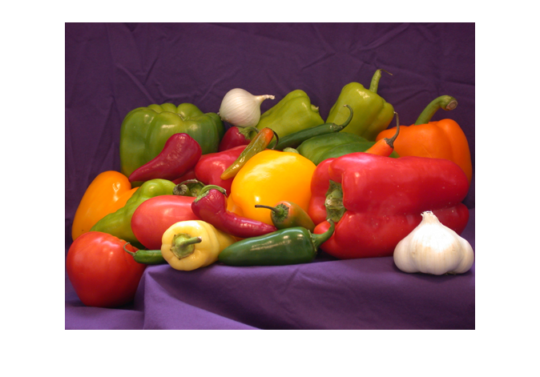
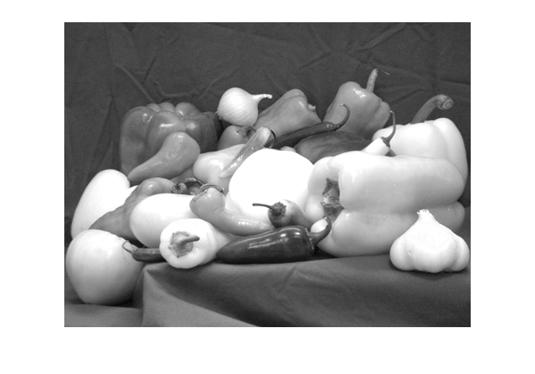
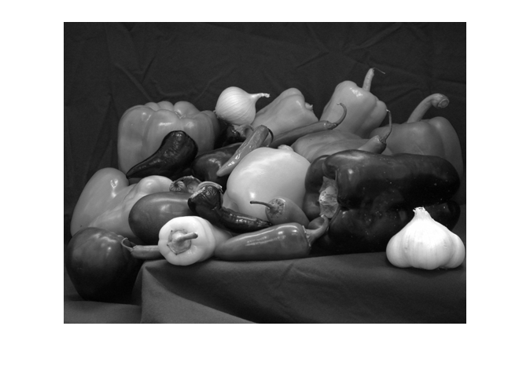
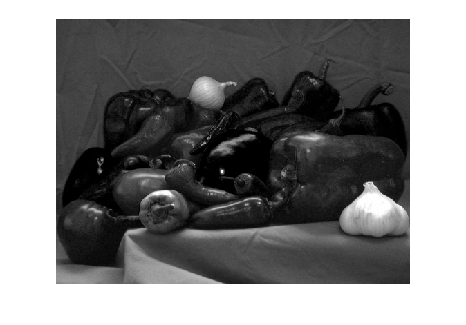
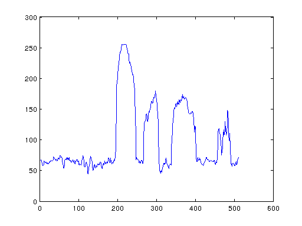

Contents
- Initialisierung:
- Lesen Sie das Bild 'peppers.png' ein und stellen Sie es dar:
- Ermitteln Sie folgende Bildinformationen:
- Speichern Sie das Bild als JPEG-Datei in Ergebnisse/ ab
- Trennen sie das Bild in die einzelnen Farbkan�le (rot, gr�n, blau).
- Was f�llt Ihnen auf bzgl. des Rot- und Blauanteils in den
- Greifen Sie aus dem roten Teilbild die 100-te Zeile heraus und
- Speichern Sie die Ergebnisse ab:
% % 1b. Praktikum - Image Processing Toolbox % --------------------------------------- % Legen Sie in Ihrem Arbeitsverzeichnis ein Unterverzeichnis an: % 1b.IP-Toolbox % % Kopieren Sie das Notebook aus ../allg dorthin und benennen Sie es um in % 1b.IP-Toolbox_Gruppe-XY.m % Legen Sie dort ein Unterverzeichnis 'Ergebnisse/' an. % % F�hren Sie die Arbeitsschritte aus, an denen ??? als Platzhalter steht % und speichern Sie das Notebook am Ende ab (zwischendurch auch % Sicherungskopien). % % Die Aufgabenstellung sowie Hinweise finden Sie im % 1.DBV-Ex_Matlab+IPTB.pdf % % -------------------------------------------------------------------------
Initialisierung:
coder = 'Cinepak'; %'None', 'Cinepak', 'Indeo3' addpath('../allg/'); addpath('../allg/Bilder/'); addpath('../Packages_Matlab/'); %--------------------------------------------------------------------------
Lesen Sie das Bild 'peppers.png' ein und stellen Sie es dar:
bild = imread('peppers.png'); figure, imshow(bild); %--------------------------------------------------------------------------
Ermitteln Sie folgende Bildinformationen:
Zahl der Dimensionen:
dim = ndims(bild) % Bildgr��e in den einzelnen Dimensionen: [y,x,k] = size(bild) % Datentyp des Bildes: desc = whos('bild'); typ = desc.class %--------------------------------------------------------------------------
dim =
3
y =
384
x =
512
k =
3
typ =
uint8
Speichern Sie das Bild als JPEG-Datei in Ergebnisse/ ab
imwrite(bild,'Ergebnisse/peppers.jpg','jpg'); %--------------------------------------------------------------------------
Trennen sie das Bild in die einzelnen Farbkan�le (rot, gr�n, blau).
Stellen Sie diese dar und speichern Sie diese ebenfalls ab
bild_r = bild(:,:,1); bild_g = bild(:,:,2); bild_b = bild(:,:,3); figure, imshow(bild_r); figure, imshow(bild_g); figure, imshow(bild_b); imwrite(bild_r,'Ergebnisse/peppers_r.jpg','jpg'); imwrite(bild_g,'Ergebnisse/peppers_g.jpg','jpg'); imwrite(bild_b,'Ergebnisse/peppers_b.jpg','jpg');  
Was f�llt Ihnen auf bzgl. des Rot- und Blauanteils in den
verschiedenen Bildern?
%A: Der Rotanteil im Bild ist wesentlich höher als der Blauanteil % -> Der rote Farbkanal weist höhere Werte auf (Grauwertbild ist heller) %--------------------------------------------------------------------------
Greifen Sie aus dem roten Teilbild die 100-te Zeile heraus und
stellen Sie sie als Funktion �ber der x-Koordinate dar; Markieren Sie diese Zeile geeignet im Rotkanalbild und stellen Sie dieses ebenfalls dar:
zeile_r = bild_r(100,:); figure, plot(zeile_r); bild_r2 = bild_r; bild_r2(100,:) = 0; figure, imshow(bild_r2);
Speichern Sie die Ergebnisse ab:
%publish('DBV_1b_IP_Toolbox_Gruppe_08.m');
'fertig'
ans = fertig